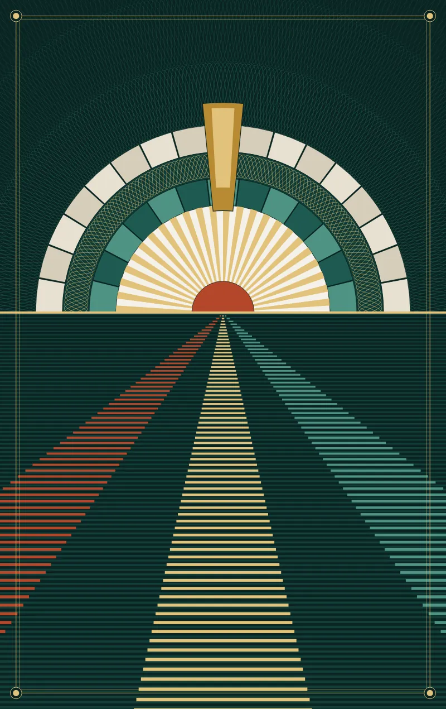

Az exit nem azonos az eladással
Egy felkészített cégnek több jó kimenete van. A tulajdonos a program végén, valós számok alapján dönt, nem kényszerből. Három kérdés mutatja az irányt.

Három kérdés, három irány
Pénzzé tenné a céget, és van vevői érdeklődés a szektorban?
Pénzt és lezárást kap. Több ajánlat közül választhat, és nagyobb eséllyel kapja meg a vételárat a zárásnál.
Értékesítés: erős tárgyalási pozícióból →Tulajdonos maradna és osztalékot venne ki, de a napi működésből kiszállna?
Megmarad a tulajdon és az osztalék, és visszakapja az idejét.
Átadás menedzsmentnek: a tulajdon marad →Van alkalmas és motivált utód a családban?
A cég a családban marad, felkészült utóddal és írásban rendezett viszonyokkal.
Családi utódlás: felkészült utód, rendezett család →A három út egymás mellett
| Értékesítés | Menedzsment | Család | |
|---|---|---|---|
| A tulajdonos | Pénzt kap, kiszáll | Tulajdonos marad, osztalékot kap | A család marad tulajdonos |
| Az irányítás | A vevőé | A külső ügyvezetőé | Az utódé |
| Piaci függés | Magas, a vevői kereslettől függ | Alacsony | Alacsony |
| Mi kell hozzá leginkább | Tiszta számok, a tulajdonostól független bevétel, versenyhelyzet a vevők között | Bizonyított ügyvezető, tulajdonosi tanács, írott döntési jogkörök | Motivált és felkészült utód, a család egyetértése, családi charta |
| Később is nyitva marad | Visszaforgatás a vevő cégébe, második bevétel a következő eladáskor | A menedzsment néhány év után ki is vásárolhatja a tulajdonost (MBO) | Külső ügyvezető bevonása, ha az utód más szerepet választ |
A három út mögött egy teljes spektrum áll
A három fő irányon belül több szerkezet is létezik. A program végén ezekből rakjuk össze az Önre szabott megoldást.
Belső utak
Családi utód, menedzsment kivásárlás (MBO), munkavállalói tulajdon (MRP), átadás menedzsmentnek a tulajdon megtartásával.
Külső utak
Stratégiai vevő, pénzügyi befektető, family office, ritkábban tőzsde.
Részleges utak
Kisebbségi részesedés eladása, osztalékkal kombinált tőkeátrendezés, lépcsőzetes kiszállás.